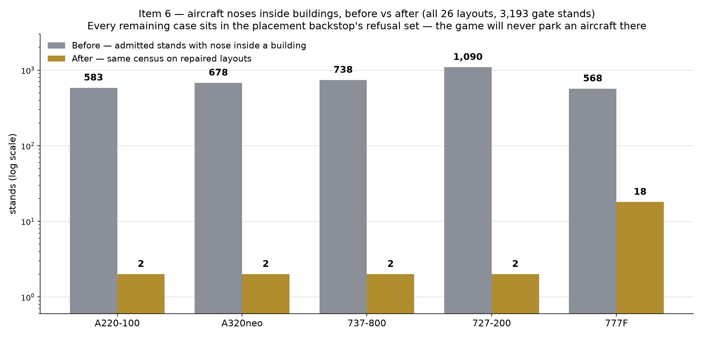

DEVELOPMENT — THE RECORD ROOM
The Evidence Annex
Where the exhibits behind the studio's claims are kept, and how each kind gets made: batteries for behaviour, cameras for appearance, and measuring instruments for everything in between.
Made by battery
Behavioural claims come off the test lanes: full suites, memory-safety shadows, static scans, run on public machines with the results read at the source. A claim about what code does is only ever as good as the last green run of the exact code it describes.
Made by camera
Appearance claims come off the proof camera: scheduled captures at fixed cameras, before-and-after pairs at identical positions, tight crops for whatever detail is under judgement. The photographs are inspected by eye — the studio's oldest instrument and still its least forgiving.
Made by measurement
Everything else gets counted. The stand repair began as a census — every stand, every type, overlaps tallied — and ended as a second census proving the first one's problem was gone. Opinions were present at neither stage.

Back to the hall
The record room's front desk keeps the latest entry, the three drawers, and the specimen case.